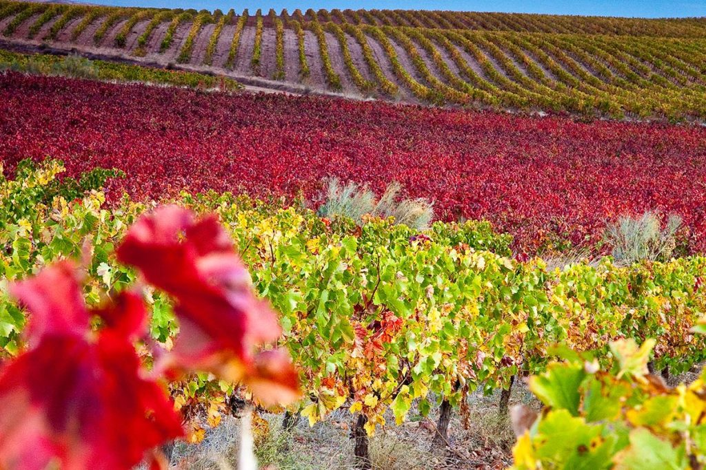

Tras dos años de trabajo, obtenemos la certificación que acredita nuestra huella de carbono cero. Un hito que nos posiciona como referentes en la protección del entorno de Cariñena.
Lograr la neutralidad de carbono no ha sido una tarea sencilla. Ha requerido una reevaluación profunda de todos nuestros procesos, desde la forma en que cultivamos nuestras vides hasta cómo embotellamos y distribuimos nuestros vinos por todo el mundo.
Para Tierra Vieja, esta certificación no es solo un sello en una etiqueta; es la culminación de un compromiso generacional con la tierra que nos da la vida. Al reducir nuestras emisiones y compensar aquellas que aún son inevitables, garantizamos que el legado de Cariñena perdure para las futuras generaciones.
"Este logro es el resultado de un esfuerzo colectivo. Ser carbono neutros es nuestra forma de devolverle a la tierra todo lo que ella nos ha dado durante décadas." — Pilar Martínez, Directora de Sostenibilidad, Tierra Vieja
Pilares de nuestra Estrategia Sostenible
Nuestra transición hacia la neutralidad de carbono se ha basado en tres pilares fundamentales que afectan directamente a la calidad y pureza de nuestros vinos:
Energía Renovable
Hemos instalado paneles solares en todas nuestras instalaciones, cubriendo el 100% de nuestras necesidades energéticas durante la fase de producción.
Movilidad Eco
Toda nuestra flota de maquinaria agrícola ha sido sustituida por modelos eléctricos o de bajas emisiones, reduciendo drásticamente la huella de CO2.
Reforestación
Compensamos nuestra huella residual mediante la plantación de más de 5.000 árboles autóctonos en el cinturón verde de nuestros viñedos.
El sabor: ¿realmente se nota la diferencia?
Los estudios de percepción sensorial son concluyentes: los vinos procedentes de viticultura ecológica presentan mayor complejidad aromática, mayor viveza en la acidez y una expresión varietal más nítida. Catadores ciegos en distintas ferias europeas han valorado sistemáticamente mejor los vinos eco cuando se comparan con sus equivalentes convencionales del mismo terroir.
En Tierra Vieja, nuestras primeras parcelas en conversión ecológica comenzamos a trabajarlas en 2022. Ya en la cosecha 2024 apreciamos un salto cualitativo en la concentración de pigmentos y en la finura de los taninos. La cosecha 2025, completamente ecológica en estas parcelas, marcará un antes y un después en nuestra línea de productos.
"No hacemos vinos ecológicos para tener un certificado. Los hacemos porque creemos que un viñedo sano produce, sencillamente, la mejor uva posible." — Carlos Benedí, Enólogo, Tierra Vieja

Certificación y transparencia: nuestro compromiso
Tierra Vieja está actualmente en proceso de certificación oficial ecológica con el Consejo Aragonés de la Producción Ecológica (CAAE). Las parcelas certificadas abarcan ya el 35% de nuestra superficie total de viñedo y el objetivo es alcanzar el 100% antes de 2030.
Toda la información sobre nuestras prácticas agrícolas, los tratamientos empleados y los resultados de los análisis de suelo están disponibles de forma pública en nuestra sección de Sostenibilidad. Creemos que la transparencia es parte del producto.